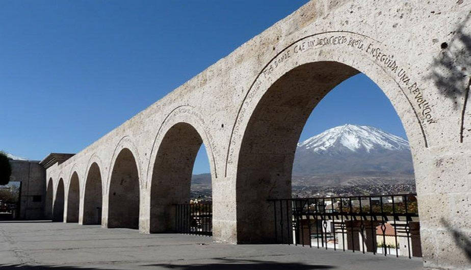
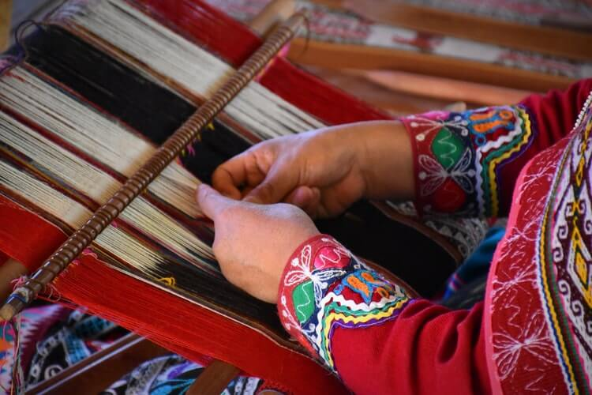

Arequipa
Arequipa has it all. Yes, absolutely everything you can imagine, you find in the territory of the 'White City'.
History, adventure, fabulous landscapes, wildlife, gastronomy, art and much more is hidden in the Villa de Nuestra
Señora de la Asunta de Arequipa -name with which it was founded in 1540-, which is firmly guarded by its natural
attraction more imposing: the Misti volcano.
Still not convinced? Don't worry, here we will give you plenty of reasons so that the next time you organize your
vacation, you have Arequipa as your main tourist destination.
If what you want is to change the routine of the city and breathe a little nature, Arequipa is what you need. The
countryside awaits you, so that you can appreciate the modern city from its exterior - where traditions and
ancient locations are still preserved - surrounded by beautiful landscapes full of green. In the viewpoints of
Yanahuara, Sachaca or Carmen Alto, you can appreciate the fabulous scenarios that Arequipa offers you.
The Mirador de Yanahuara
The Mirador de Yanahuara is one of the most important tourist places in the city of Arequipa. Located in a
traditional neighborhood that bears the same name, it conquers its visitors with its narrow cobbled streets and
its old houses made of ashlar and framed by its typical orchards.
This tourist attraction draws attention for its beautiful ashlar arches, which serve as portals to enter the
viewpoint that offers the best view of Arequipa. From its balconies, located at 2,343 meters high, you can see
the White City that contrasts with the natural wonders that surround it, these being the Misti volcano, the
Chanchani and the Pichu Pichu.
Another attraction of the Mirador de Yanahuara are its writings engraved on ashlar, by illustrious people from
the city of Arequipa. Built in the 19th century, the Mirador de Yanahuara is next to the church of San Juan de
Yanahuara, a baroque monument built in 1750

Andean textiles
Andean textiles are artifacts with exceptional qualities. Apart from being tactile objects and, at the same
time, means of transmitting socio-cultural information about social status and aesthetic values, for example,
they transmit data about the local economy and historical information. Through the fabrics, relationships are
established that intersect these areas. Today, fabrics made on the traditional loom1 continue to play an
important role in local Andean societies. They are present at every critical moment in the life cycle and play a
conservative role that creates identity. In the last decade, signs of a real role change could be detected, and
this is manifested in the meaning of the fabrics. These alterations originate in the current socio-political
situation in the Andean region, as well as in local economic conditions, influenced by both globalization and
globalization2. Investigating these processes along the line of break that is being formed between adapted
traditions and new perspectives, not only offers the possibility of collecting data on the alteration and
formation of identities, but also allows to find definite solutions by the local actors themselves..
